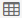
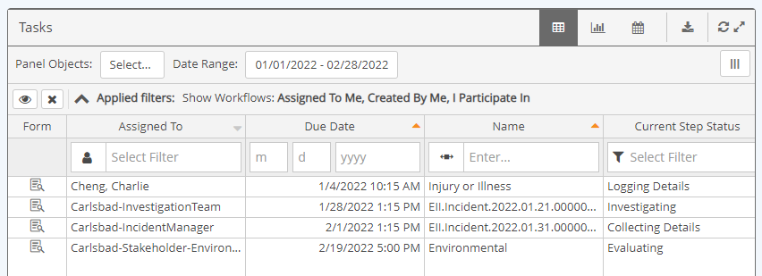
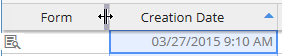
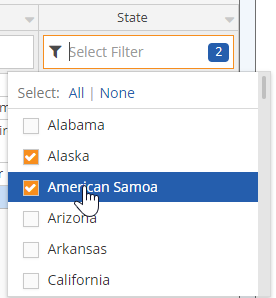
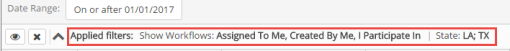
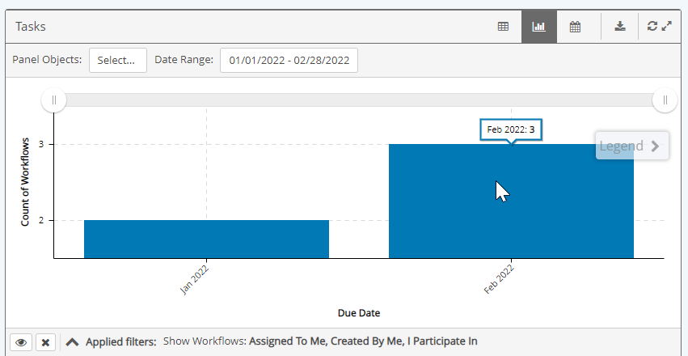

Choose the Table

, Chart , or Calendar
, or Calendar  icon on the panel bar.
icon on the panel bar.
A Workflow Panel shows selected information about workflows in the system. Workflow panels may be filtered for specific workflow types, and by properties. Panels can be viewed in table or chart mode.
To change the panel view:
Choose the Table

, Chart, or Calendar icon on the panel bar.
A column with links may be available to view or edit the workflow form.

The Form link takes you to the workflow step form, where you can view or edit the information directly from the Portal. See View or Edit Workflow Step.
This Link icon takes you to the workflow form in the Management System.
Workflow records from other apps may include a link to open the appropriate app and the specific form or record in that app:
Link to AuditApp
Link to InspectionApp
Link to custom app (Advanced Workflows (WAB) or URL macro)
 Link to IncidentApp
Link to IncidentApp
Viewing options include:
To resize a column, hover over the right edge of the column header until the slider appears, then select and hold while you drag and drop to the new width.

To move a column, hover over the column header to select the column, click and hold, and drag and drop the column to the desired position.

If the filter criteria boxes are available below the column head, you can add a filter for the column.
To add a filter:
Click the filter box at the top of the column you want to add a filter to.
Depending on the field time, you can enter a value, or a partial value for a text field, or choose from a dropdown list.
Click the icon next to the box to choose the filter condition.
Any filters that have been applied are displayed above the panel.

In Chart View you can view workflow data in graphic format.

Show or hide the legend by clicking the arrow. Click and hold to drag the legend to another position.
Use the slider at the top to reduce or increase the date range on the horizontal axis. Click Show All to return to the original page date range.